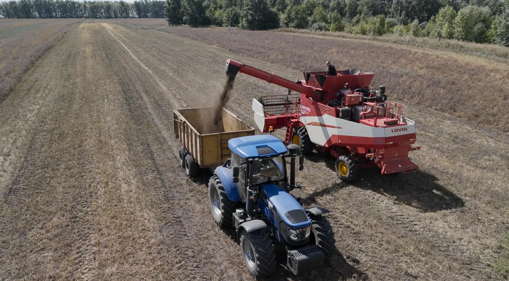

Наша история
О компании О.А.З.И.С
История О.А.З.И.С началась с простого наблюдения: традиционные культуры теряют рентабельность из-за засух и обеднения почв. Мы задались целью найти альтернативы. В 2019 году наша команда инициировала селекционные эксперименты с подсолнечником. Отсюда мы начали стремительно развиваться, браться за более трудные и интересные проекты. Сегодня О.А.З.И.С — это не просто семеноводческая компания. Мы исследователи с горящими глазами, новыми идеями, готовые покорять самые недоступные вершины!
О.А.З.И.С в цифрах
За годы работы мы превратились из небольшой исследовательской группы в устойчиво развивающуюся сельскохозяйственную компанию.
Наши результаты говорят громче слов:
- > 2000 га — посевные площади под контролем компании.
- 20+ сортов и гибридов в линейке (от пшеницы до опунции).
- 5 лет успешной селекционной работы
- 5 000 тонн — объем переработанной продукции за последний сезон.
- 35 специалистов в команде, включая магистров и кандидатов наук.